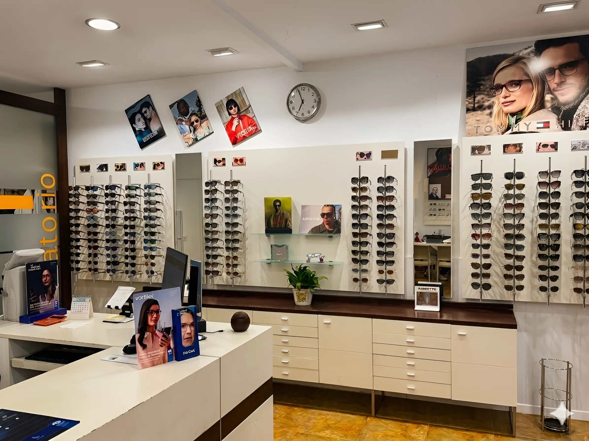

Irún, Gipuzkoa · Depuis 2007
Votre opticien de référence
à Irún depuis 2007
Nous consacrons à votre vue le temps qu'elle mérite : examen visuel soigné, conseils honnêtes et les meilleures marques. Plus de 17 ans à prendre soin de la vision des familles de la Bidassoa.
Notre Engagement
Chaque client est unique. C'est ainsi que nous traitons chaque personne qui franchit notre porte.
Attention maximale à nos clients
Nous prenons le temps nécessaire pour comprendre les besoins de chaque personne.
Suivi des besoins de chaque personne
Nous vous accompagnons à chaque étape de votre santé visuelle avec un suivi personnalisé.
Professionnalisme et qualité, en technique et en matériel
Équipe qualifiée et technologie de pointe pour prendre soin de votre vision.
Votre visite, étape par étape
Sans précipitation et sans engagement. Voilà à quoi ressemble une visite chez Optique Anaka.
Vous prenez rendez-vous
Réservez en ligne en une minute, appelez-nous ou écrivez-nous sur WhatsApp. C'est vous qui choisissez le jour et l'heure.
Nous examinons votre vue
Optométrie complète et, si nécessaire, rétinographie. Nous vous expliquons chaque résultat avec calme.
Nous choisissons ensemble
Nous vous conseillons la monture et les verres qui conviennent le mieux à votre visage, votre vie et votre correction.
Nous prenons soin de vous ensuite
Ajustements, contrôles et suivi chaque fois que vous en avez besoin. Nous sommes là, dans le quartier.
Nos Collections
Découvrez nos collections en montures, lunettes correctrices et lunettes de soleil.


Votre santé visuelle est notre priorité
Nous vous proposons un service complet pour prendre soin de vos yeux dès aujourd'hui.
Optométrie
Examens visuels complets pour détecter les défauts de réfraction et autres anomalies.
Rétinographie
Images haute résolution de la rétine pour détecter les maladies oculaires à temps.
Contactologie
Adaptation de lentilles de contact personnalisées pour votre type de vision et style de vie.
Contrôle de la Myopie
Programmes spécifiques pour ralentir la progression de la myopie chez les enfants et les jeunes.
Des clients qui nous font déjà confiance
Des familles d'Irún, Hondarribia et de toute la Bidassoa qui prennent soin de leur vue avec nous.
Cela fait des années que j'y vais et je ressors toujours ravie. On vous consacre le temps qu'il faut et on vous explique tout avec patience. Un accueil chaleureux et très professionnel.
On m'a fait une rétinographie et on a détecté à temps quelque chose que j'ignorais. De vrais professionnels. Ce n'est pas une optique qui vend pour vendre.
Nous avons choisi ensemble les lunettes de ma fille et le résultat est superbe. J'adore qu'on puisse être reçu comme dans le commerce de quartier d'autrefois.
Optique “ANAKA”
C. de Fuenterrabía, 14 · 20301 Irún, Gipuzkoa
Adresse
C. de Fuenterrabía, 14
20301 Irún, Gipuzkoa
Horaires
Lun–Ven : 9h30–13h30 · 16h00–19h30
Sam : 9h30–13h00
Samedi après-midi : fermé
Depuis combien de temps n'avez-vous pas contrôlé votre vue ?
Prenez rendez-vous aujourd'hui et réservez votre créneau avec notre équipe. Sans engagement et avec tout le temps nécessaire pour trouver ce qui vous convient vraiment.
- Accueil personnalisé
- Au centre d'Irún
- Es · Eu · Fr